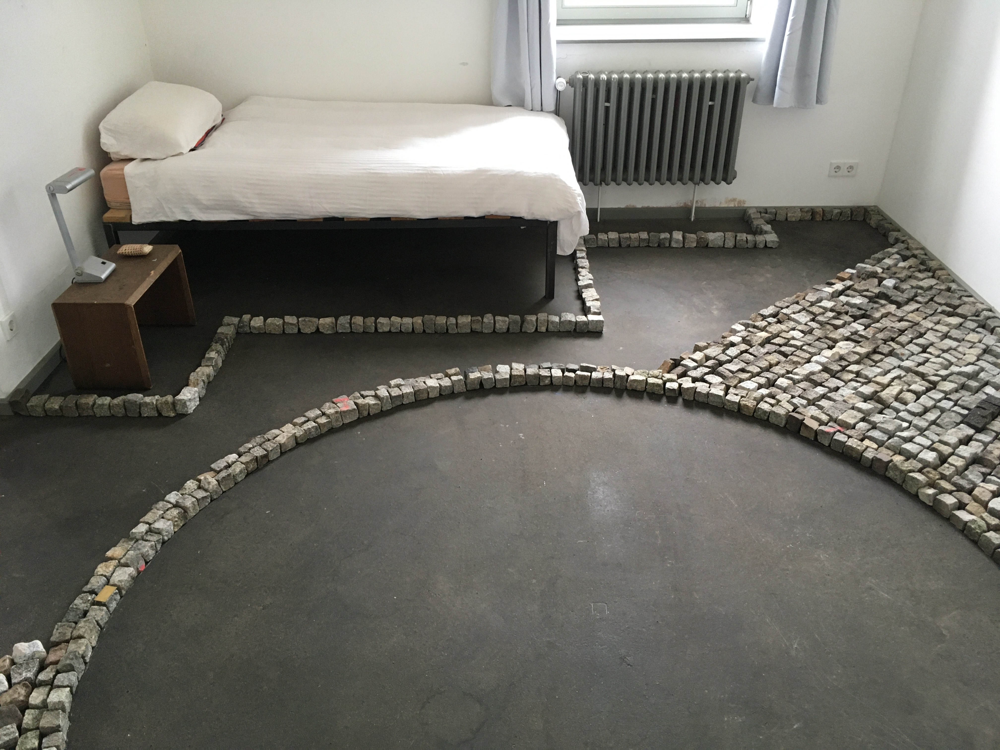

extending limbs, making moves / or, the stones we carry
Zentrum für Kunst und Urbanistik residency program August/September, Berlin, 2021
I have been paving the floor of my studio apartment at ZKU for the past 2 months, using found cobblestones from the neighbourhood of Moabit and sometimes beyond. I wash each one before arranging them on the floor, making sure to avoid my bed in the corner of the room. Space has been made for a large stone circle in the centre. Backpacks, bikes, make-shift devices, some more practical than others are used for transportation. I search the pavements, extending limbs, shifting weight, picking up these quiet pixels of geological time. My body is in turn shaped by these slowly accumulating units which embody a temporality that is beyond my capability of understanding, but feel drawn to touch. These stones, somehow pushed out of place, creating unclear and questionable borders are collected and repurposed to build a provisional site. The purpose in and of itself is the process, creating a temporary space that gently cups its hands around my relationship to stone. And lately more and more, the un-precious stone, the hard-working ones. Being careful not to be prescriptive around the use of the space, I can cast some questions into it, reflecting on not just my relationship to these objects, but a more collective one. Stories of blunt disobedient force, stones used as weapons in civil unrest, heavy, on hand, the provenance of and violent conditions surrounding extraction, human slave labour. I also think about the Trümmerfrauen. Resisting the urge to anthropomorphise, I understand that these are purely human stories. I wonder though at traces of human touch, polished surfaces, enduring geometries, subtle resonant frequencies, all as types of encoded characters. And what of my place in this chain of human affect. After a blink of their time, I return them back to the streets, casting new autonomous circles, offering new alignments and neighbourhood apertures. This is an ongoing work and anecdotal curiosity into how information is potentially encoded, stored, and retrieved in a material like stone, but more so, my own body. And how this relationship finds expression, through looking, feeling and touching my immediate environment.
this project in many ways has been inspired by the work of artist friends who ive met and collaborated with in small serindipitous ways over the past 3 years. the work of xin cheng xin cheng has been very influencial to me, her seedbag for resourcefulness seedbag for resourcefulness and makeshifting are beautiful observations and interventions into a living world.
